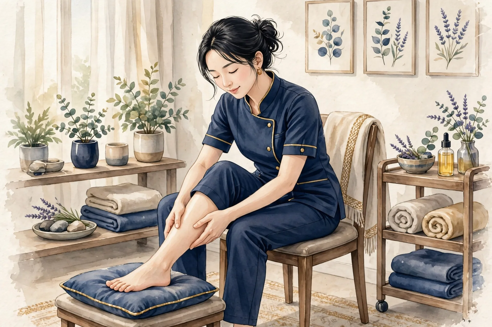

新大阪で歩き回った日に気になる足の疲れ｜買い物・用事のあとのセルフケア

新大阪で買い物や用事を済ませて帰る途中、足が重く感じたり、ふくらはぎが張るように感じたり、足裏がじんわりと疲れているように感じたりすることはありませんか。新大阪は大きな駅と商業施設が集まる街で、デパートのフロアを巡ったり、雑貨店をはしごしたり、用事でいくつもの場所を回ったりと、気づけば一日でよく歩いているものです。歩くことは体を動かすよい機会ですが、慣れない靴や荷物の重さ、立ちっぱなしの時間が重なると、帰り道には足の疲れとして感じられることがあります。このコラムでは、歩き回った日に気になる足の疲れの一般的なとらえ方と、疲れを感じやすい要因の整理、その日のうちにできるセルフケア、日常の過ごし方の見直し、受診を考える目安についてお伝えします。
歩き回った日の足の疲れとは、どんな状態か
足の疲れは、歩く・立つといった動作で足の筋肉を使い続けたあとに現れる重さやだるさ、張りとして感じられることが多いと言われています。現れ方は人によってさまざまで、ふくらはぎが張るように感じる、足裏が熱を持ったように感じる、足首が重く感じる、太ももまでだるさが広がるように感じる、靴がきつく感じられる、といった声があります。歩き回った日は、帰宅して靴を脱いだときに初めて疲れに気づくこともあります。足の疲れは、その日のうちに休むと翌朝には軽くなることもあれば、歩き回る日が続くと翌日まで残ることもあります。同じ距離を歩いても、感じ方には個人差が大きく、靴の形や荷物の重さ、歩く速さや休憩の取り方、その日の体調や気温などが重なって現れるものと考えられています。足は体を支える土台でもあるため、疲れを感じたときは、がまんして歩き続けるのではなく、こまめに座って休むことが大切です。
足の疲れが強い日は、脚のむくみを感じやすくなることもあり、夕方になると靴がきつく感じる、という声もあります。むくみは、立ちっぱなしや歩きっぱなしのあとに、足に水分がたまりやすい状態になることで感じられると言われています。足の疲れとむくみが重なると、全身の疲労感として感じられることもあります。
歩き回った日に疲れを感じやすい要因の整理
靴と歩き方
歩き回った日の足の疲れには、靴の形が関わっていると言われています。ヒールの高い靴や、つま先の細い靴、かかとが固定されにくい靴では、足の指や足裏の一部分に負担が集まりやすくなります。新しい靴や久しぶりに履く靴では、靴ずれが起きやすく、歩くたびに気になって歩き方が変わり、ふくらはぎや太ももに余計な力が入ることもあります。歩く速さも要因のひとつです。時間に追われて早足で歩き続けると、ふくらはぎの筋肉を使う時間が長くなり、疲れを感じやすくなります。階段の上り下りが多い日は、太ももの前側やふくらはぎに負担がかかりやすくなります。新大阪の駅構内は広く、乗り換えの移動だけでもよく歩くため、買い物の前から足を使っていることを意識しておくとよいでしょう。
荷物と立ちっぱなしの時間
買い物袋やかばんの重さも、足の疲れに関わる要因のひとつです。片手だけに重い荷物を持つと、体のバランスが片側に傾き、片足に負担が集まりやすくなります。両手に荷物を持つ場合も、腕の重さが肩から体全体に伝わり、歩く姿勢が変わることがあります。立ちっぱなしの時間も見逃せません。レジに並ぶ時間、試着を待つ時間、エレベーターを待つ時間。歩いている時間だけでなく、立っている時間の積み重ねも足の疲れにつながります。特に、かかとに体重をかけたままじっと立っていると、足裏やふくらはぎが張りやすくなると言われています。買い物の合間にベンチに座る、カフェでひと休みするなど、立つ時間を区切ることが大切です。
新大阪ならではの要因
新大阪ならではの要因もあります。駅構内の長い移動や、地下街の上り下り、デパートのフロアを巡る歩行は、気づかないうちに歩数を増やします。週末の混雑した通りでは、人をよけながら歩くため、歩幅が小さくなり、足の指で踏ん張る回数が増えることもあります。夏の暑い日は、汗をかいて体の水分が減りやすく、足が重く感じられることがあります。冬の寒い日は、体が冷えて足先の巡りが滞りやすい状態になると言われています。冷えた状態で歩き回ると、足裏のこわばりを感じやすくなることもあります。
その日のうちにできるセルフケア
歩き回った日の足の疲れは、帰宅してからその日のうちにいたわるのが続けやすい方法です。まず、靴を脱いで足を解放し、足の指を大きく広げてから、ゆっくりと握る動きを数回繰り返します。次に、足首をゆっくりと大きく回します。右回り、左回りとそれぞれ数回ずつ、力を入れずに行いましょう。ふくらはぎの張りが気になるときは、両手でふくらはぎを下から上へ軽くさすってみてください。足裏が疲れているときは、ゴルフボールやテニスボールを床に置き、足裏でゆっくりと転がすのもおすすめです。強く踏みつけず、心地よいと感じる強さで行うことが大切です。
足を温める時間も、歩き回った日のセルフケアのひとつです。ぬるめのお湯で足を洗い、タオルで包むように温めると、冷えた足先がほぐれやすくなります。入浴のときは、湯船の中で足首をゆっくり回したり、足の指を広げたり閉じたりする動きを取り入れると、足全体の巡りを意識しやすくなります。入浴後は、保湿クリームを足の裏やふくらはぎに伸ばしながら、軽くさするように塗ると、セルフケアの時間になります。寝る前には、足を少し高くして横になる時間をつくると、足の重だるさが和らぎやすくなります。クッションや丸めたタオルを足首の下に置き、10分ほど休むだけでも、足が軽く感じられることがあります。夕食は温かい汁物を一品加え、体を内側から温めることも、冷えやすい足先をいたわる工夫のひとつです。
日常の過ごし方の見直し
歩き回る日の足の疲れを感じにくくするには、日常の過ごし方を見直すことも大切です。買い物や用事で出かける日は、歩きやすい靴を選ぶことから始めてみてください。ヒールの低い靴や、足に合ったサイズの靴では、足裏全体で体重を受け止めやすくなります。荷物はできるだけ両手に分けて持つか、リュックサックを使うと、体のバランスが取りやすくなります。外出の予定を立てるときは、歩く時間と休憩の時間をあらかじめ分けておくと、立ちっぱなしの時間を区切ることができます。駅構内の移動が多い日は、エスカレーターやエレベーターを上手に使い、階段ばかりを選ばないことも工夫のひとつです。日ごろから足首を回す、ふくらはぎを軽く伸ばすといった小さな動きを習慣にしておくと、歩き回る日の足の負担を感じにくくなります。姿勢の崩れが気になるときは、歩くときに背筋を伸ばし、かかとから着地する歩き方を意識してみてください。
受診を考える目安
セルフケアを続けても、足の痛みや腫れ、しびれが数週間以上続く場合や、片足だけが急に腫れた、皮膚の色が変わった、熱を持っている、歩くたびに強い痛みがある、夜間に痛みで目が覚めるといった変化がある場合は、早めに医療機関を受診してください。急に強い痛みや腫れが出たときや、日常生活に支障が出ているときも、自己判断で様子を見るのではなく、医師に相談することが大切です。症状の感じ方は人それぞれで、同じような足の疲れでも背景が異なることがあります。気になる変化があれば、まずはかかりつけ医や整形外科に相談してみてください。
サロンの案内
それでも歩き回った日の足の重だるさや、ふくらはぎの張りが抜けない日は、プロの手に委ねる時間も選択肢の一つです。美容整体ステラ・カストルは、大阪・新大阪エリアで営業中の女性専用サロンです。オイルマッサージと美容整体で、歩き回った日の足の疲れや、肩や首のこわばりを丁寧にほぐすお手伝いができるよう、準備を進めています。料金は90分10,000円の単一価格（初回割引なし）、営業時間は月〜土17:00〜22:00・日曜休み（予定）です。営業中（ご予約はLINE公式アカウントで受付中です）。LINE公式アカウントでご予約・お問い合わせを承っています。開院まで、このコラムで季節のセルフケアをお届けしていきます。